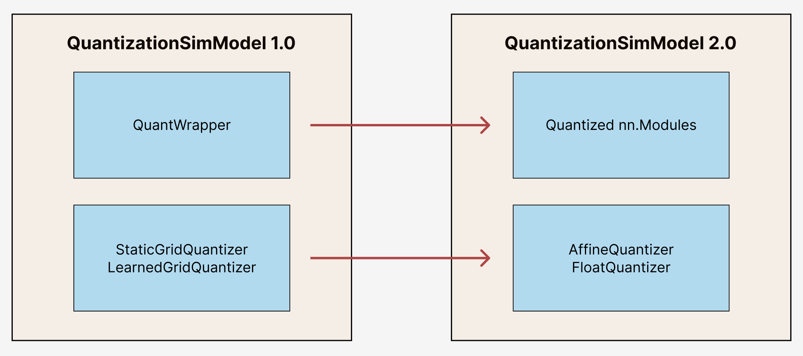

Migration guide¶
Note
You can interact with aimet_torch through the high-level APIs in the same way.
Methods like QuantizationSimModel.compute_encodings() and QuantizationSimModel.export()
will remain the same.
It may require little work to convert your code from aimet_torch 1.x to aimet_torch 2 only if you are
using low-level internal components of QuantizationSimModel.
aimet_torch 1.x vs aimet_torch 2¶
Migration to aimet_torch 2 enables access to new features, easier debugging, and simpler code that is easier to extend. This guide provides an overview of the migration process and describes the fundamental differences between the two versions.
Before migrating, it is important to understand the behavior and API differences between aimet_torch 1.x and aimet_torch 2. Under the hood, aimet_torch 2 has a different set of building blocks and properties than aimet_torch 1.x, as shown below:
{kind=link}
Migration Process¶
Following are some code examples to help you understand how low-level internal components of
QuantizationSimModel have changed from aimet_torch 1.x to aimet_torch 2.
Moving from QuantWrapper to Quantized Modules¶
To enable quantization in aimet_torch 1.x, modules are wrapped with a QcQuantizeWrapper. These
wrapped modules can be accessed as follows:
from aimet_torch.v1.quantsim import QuantizationSimModel as QuantizationSimModelV1
sim = QuantizationSimModelV1(...)
all_quant_wrappers = sim.quant_wrappers()
for quant_wrapper in sim.quant_wrappers():
print(quant_wrapper)
StaticGridQuantWrapper(
(_module_to_wrap): Linear(in_features=100, out_features=200, bias=True)
)
StaticGridQuantWrapper(
(_module_to_wrap): ReLU()
)
In contrast, aimet_torch 2 enables quantization through quantized nn.Modules - modules are no longer
wrapped but replaced with a quantized version. For example, a nn.Linear would be replaced with
QuantizedLinear, nn.Conv2d would be replace by QuantizedConv2d, and so on.
The quantized module definitions can be found under aimet_torch.nn.
These quantized modules can be accessed as follows:
from aimet_torch.quantsim import QuantizationSimModel as QuantizationSimModelV2
sim2 = QuantizationSimModelV2(...)
all_q_modules = sim2.qmodules()
for q_module in sim2.qmodules():
print(q_module)
QuantizedLinear(
in_features=100, out_features=200, bias=True
(param_quantizers): ModuleDict(
(weight): QuantizeDequantize(shape=[1], bitwidth=8, symmetric=True)
(bias): None
)
(input_quantizers): ModuleList(
(0): QuantizeDequantize(shape=[1], bitwidth=8, symmetric=False)
)
(output_quantizers): ModuleList(
(0): None
)
)
QuantizedReLU(
(param_quantizers): ModuleDict()
(input_quantizers): ModuleList(
(0): None
)
(output_quantizers): ModuleList(
(0): QuantizeDequantize(shape=[1], bitwidth=8, symmetric=False)
)
)
For more information on Quantized modules, please refer to the API reference guide here.
Moving from StaticGrid and LearnedGrid Quantizer to Affine and Float Quantizer¶
In aimet_torch 1.x, we relied on StaticGridQuantizer and LearnedGridQuantizer. For both,
floating point quantization could be enabled based on QuantizationDataType passed in.
from aimet_torch.v1.tensor_quantizer import StaticGridPerChannelQuantizers
from aimet_common.defs import QuantizationDataType
fp_quantizer = StaticGridPerChannelQuantizer(data_type = QuantizationDataType.float, ...)
affine_quantizer = StaticGridPerChannelQuantizer(data_type = QuantizationDataType.int, ...)
However, in aimet_torch 2, this functionality is separated into an AffineQuantizer and a
FloatQuantizer. Users can access these quantizers and related operations under
aimet_torch.quantization.
import aimet_torch.quantization as Q
affine_q = Q.affine.Quantize(shape=(5, 1), bitwidth=8, symmetric=False)
affine_qdq = Q.affine.QuantizeDequantize(shape=(5, 1), bitwidth=8, symmetric=False)
fp_qdq = Q.float.FloatQuantizeDequantize(dtype=torch.float16)
From the wrapped module (aimet_torch 1.x) or quantized module (aimet_torch 2), the attributes to access
the quantizers remain consistent: .input_quantizers for input quantizers, .output_quantizers
for output quantizers, and .param_quantizers for parameter quantizers.
For more information on Quantizers, please refer to the API reference guide here.
Code Examples¶
Setup
# aimet_torch 1.x
from aimet_torch.v1.quantsim import QuantizationSimModel as QuantizationSimModelV1
sim1 = QuantizationSimModelV1(...)
wrap_linear = sim1.model.linear
# aimet_torch 2
from aimet_torch.quantsim import QuantizationSimModel as QuantizationSimModelV2
sim2 = QuantizationSimModelV2(...)
qlinear = sim2.model.linear
Case 1: Manually setting common attributes
Bitwidth
# aimet_torch 1.x
wrap_linear.param_quantizers['weight'].bitwidth = 4
wrap_linear.input_quantizers[0].bitwidth = 4
wrap_linear.output_quantizers[0].bitwidth = 4
# aimet_torch 2
if qlinear.param_quantizers['weight']:
module.param_quantizers['weight'].bitwidth = 4
if qlinear.input_quantizers[0]:
qlinear.input_quantizers[0].bitwidth = 4
if qlinear.output_quantizers[0]:
qlinear.output_quantizers[0].bitwidth = 4
Symmetry
# aimet_torch 1.x
wrap_linear.param_quantizers['weight'].use_symmetric_encodings = True
wrap_linear.param_quantizers['weight'].is_unsigned_symmetric = False
wrap_linear.param_quantizers['weight'].use_strict_symmetric = False
wrap_linear.input_quantizers[0].use_symmetric_encodings = True
wrap_linear.input_quantizers[0].is_unsigned_symmetric = False
wrap_linear.input_quantizers[0].use_strict_symmetric = False
wrap_linear.output_quantizers[0].use_symmetric_encodings = True
wrap_linear.output_quantizers[0].is_unsigned_symmetric = False
wrap_linear.output_quantizers[0].use_strict_symmetric = False
# aimet_torch 2
# Notes: simplified into two flags
if qlinear.param_quantizers['weight']:
qlinear.param_quantizers['weight'].symmetric = True
qlinear.param_quantizers['weight'].signed = True
if qlinear.input_quantizers[0]:
qlinear.input_quantizers[0].symmetric = True
qlinear.input_quantizers[0].signed = True
if qlinear.output_quantizers[0]:
qlinear.output_quantizers[0].symmetric = True
qlinear.output_quantizers[0].signed = True
Encoding Data
# aimet_torch 1.x
import libpymo
if wrap_linear.param_quantizers['weight'].encoding:
encoding = libpymo.TfEncoding()
encoding.max = 1
encoding.min = -1
wrap_linear.param_quantizers['weight'].encoding = encoding
if wrap_linear.input_quantizers[0].encoding:
encoding = libpymo.TfEncoding()
encoding.max = 1
encoding.min = -1
wrap_linear.input_quantizers[0].encoding = encoding
if wrap_linear.output_quantizers[0].encoding:
encoding = libpymo.TfEncoding()
encoding.max = 1
encoding.min = -1
wrap_linear.output_quantizers[0].encoding = encoding
# aimet_torch 2
# Notes: TfEncoding() is no longer used, encoding min/max are of type torch.nn.Parameter
if qlinear.param_quantizers['weight']:
qlinear.param_quantizers['weight'].min.copy_(-1.0)
module.param_quantizers['weight'].max.copy_(1.0)
if qlinear.input_quantizers[0]:
qlinear.input_quantizers[0].min.copy_(-1.0)
qlinear.input_quantizers[0].max.copy_(1.0)
if qlinear.output_quantizers[0]:
qlinear.output_quantizers[0].min.copy_(-1.0)
qlinear.output_quantizers[0].max.copy_(1.0)
Case 2: Enabling and Disabling Quantization
Is quantization enabled?
# aimet_torch 1.x
if wrap_linear.param_quantizers['weight'].enabled:
pass
# aimet_torch 2
# Notes: Quantizers no longer have an 'enabled' attribute. If a quantizer is present, it is enabled
if qlinear.param_quantizers['weight']:
pass
Disabling Quantization
# aimet_torch 1.x
wrap_linear.param_quantizers['weight'].enabled = False
# aimet_torch 2
# Notes: Quantizers can be disabled by setting them to None OR using the utility API (_remove_input_quantizers, _remove_output_quantizers, _remove_param_quantizers)
qlinear.param_encodings["weight"] = None
qlinear._remove_param_quantizers('weight')
Enabling Quantization
# aimet_torch 1.x
wrap_linear.param_quantizers['weight'].enabled = True
# aimet_torch 2
import aimet_torch.quantization as Q
qlinear.param_quantizers['weight'] = Q.affine.QuantizeDequantize(...)
Temporarily disabling Quantization
# aimet_torch 1.x
assert wrap_linear.param_quantizers['weight'].enabled
wrap_linear.param_quantizers['weight'].enabled = False
# Run other code here
wrap_linear.param_quantizers['weight'].enabled = True
# aimet_torch 2
assert qlinear.param_quantizers['weight']
with qlinear._remove_param_quantizers('weight'):
assert qlinear.param_quantizers['weight'] is None
# Run other code here
assert qlinear.param_quantizers['weight']
Case 3: Freezing encodings
# aimet_torch 1.x
if not wrap_linear.param_quantizers['weight']._is_encoding_frozen:
wrap_linear.param_quantizers['weight'].freeze_encodings()
# aimet_torch 2
# Notes: There is no longer a concept of "freezing". Mimicking v1 freezing behavior involves the allow_overwrite and requires_grad_ flag
qlinear.param_quantizers['weight'].allow_overwrite(False) # Prevents encodings from being overwritten by AIMET APIs
qlinear.param_quantizers['weight'].requires_grad_(False) # Prevents encodings from being learned
How to use aimet_torch 1.x¶
If you still prefer to use aimet_torch 1.x, your imports should originate from the aimet_torch.v1
namespace and be replaced as shown below.
AIMET Classes |
|
|
|---|---|---|
QuantSim |
||
AdaRound |
|
|
Sequential MSE |
||
QuantAnalyzer |